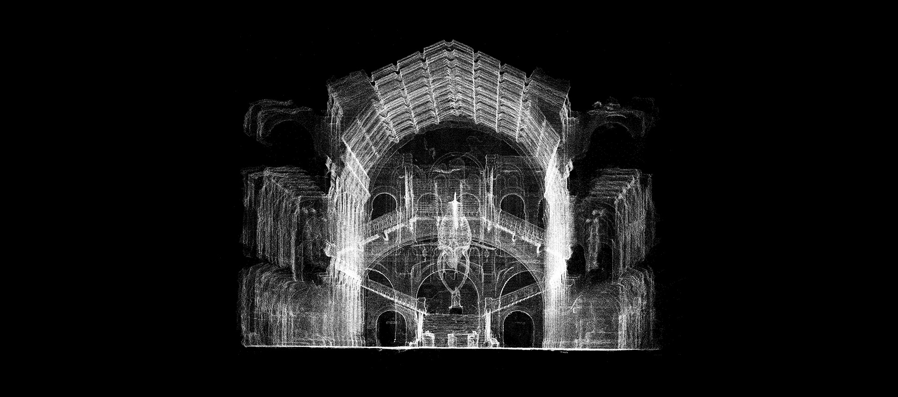
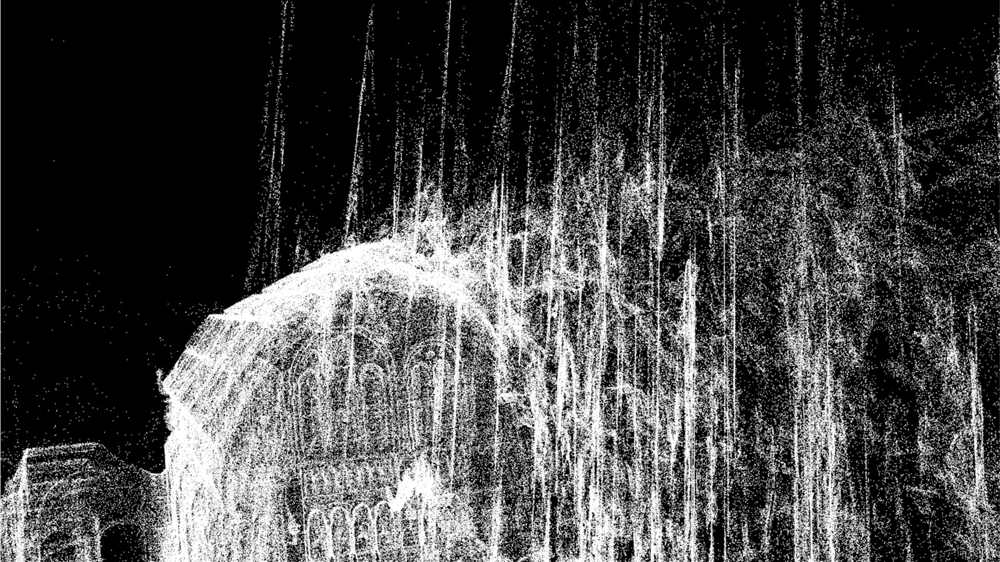
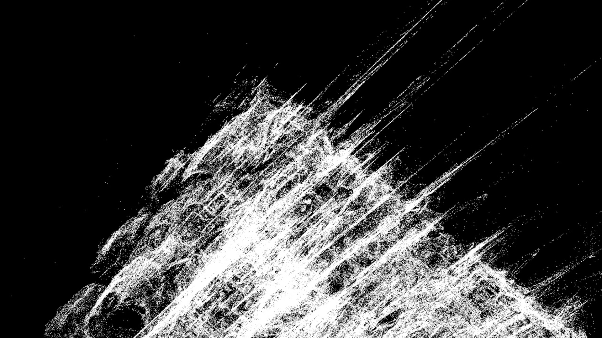
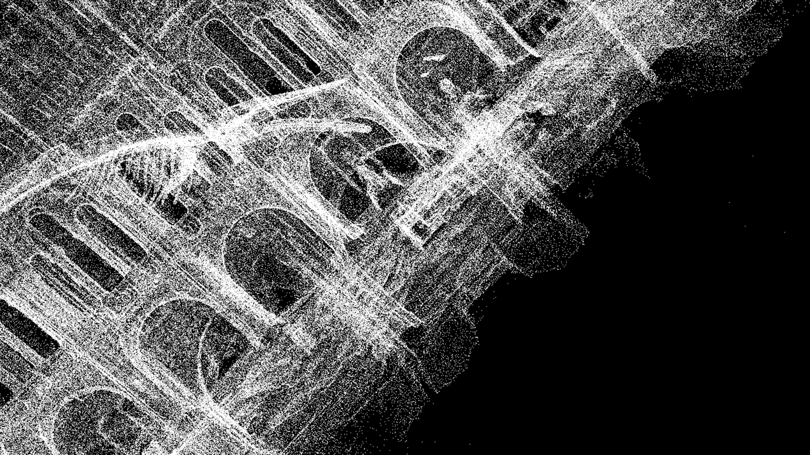

Corpuscule



credits
supervised by Sami Benhaj
teaching assistant by Jammy Hermann and Achille Masson




credits
supervised by Sami Benhaj
teaching assistant by Jammy Hermann and Achille Masson